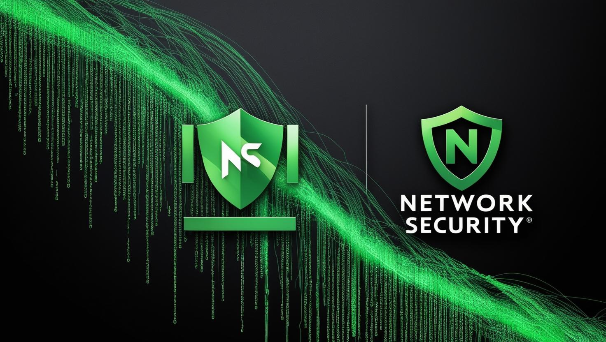

About Me
Hello! I'm Iddy Chesire, a sophomore Information Technology student at Jomo Kenyatta University. I'm driven by a passion for the dynamic fields of Cybersecurity, Networking, Web Development, and Artificial Intelligence. I'm eager to explore the intersections of these technologies and contribute to innovative solutions.
My current academic focus includes strengthening my skills in web development (HTML, CSS, JavaScript), database management (SQL, Java), alongside exploring the fundamentals of networking and cybersecurity. I'm also beginning to delve into the exciting realm of Artificial Intelligence, seeking to understand its potential applications in various domains.
My Skills
- HTML
- CSS
- JavaScript
- Java
- SQL
- Cybersecurity Fundamentals
- Networking Basics
- Artificial Intelligence Concepts
My Projects
-

Network Security Implementation using CPT
....In Progress
In this project i designed a secure office network using Cisco Packet Tracer. It features routers, switches, PCs, and a server, emphasizing security. We configure strong passwords, SSH, ACLs for traffic control, and a simulated IDS. Attack scenarios validate our security setup, demonstrating core network security practices and Packet Tracer's practical application.
-
Cybersecurity News Platform
....In Progress
My cybersecurity news platform aggregates and delivers critical security updates, vulnerabilities, and threat analyses. It aims to educate and inform users, from beginners to professionals, on the latest digital threats and defensive strategies, fostering a more secure online environment.
My Journey
My journey into the multifaceted world of Information Technology started with my enrollment at Jomo Kenyatta University back in 2023. As a sophomore, I'm currently laying the groundwork for a career that spans across Cybersecurity, Networking, Web Development, and Artificial Intelligence.
Milestones:
- Done a networking course by Cisco (CCNA)
- Achieved a Certificate in Generative AI by Alison
- OPSWAT Certification
- Fortinet Certified Associate, Cyber security
I'm continuously seeking opportunities to integrate my passion for Cybersecurity, Networking, Web Development, and AI through personal projects, collaborative learning, and future internships.
Contacts
I'm eager to connect and discuss potential opportunities, collaborations, or any inquiries you might have. Feel free to reach out using the information below.
Email: iddychesire098@gmail.com
LinkedIn: https://www.linkedin.com/in/iddy-k-chesire-55009b264
GitHub: https://github.com/acunetix2/
Phone: +254 799 016-384.
Address: Eldoret Town, Uasin Gishu County, Kenya.